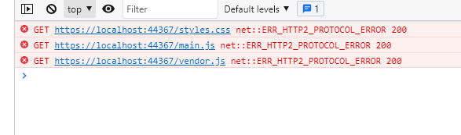

Если у вас на сайте периодически стали выдаваться ошибки ERR_HTTP2_PROTOCOL_ERROR по запросу ресурса, то милости прошу прочитать данную статью.
Раз вы сюда пришли из поисковика или просто читаете вышедший пост, как постоянный читатель :) то скорее всего имеете проблему возникновения ошибки ERR_HTTP2_PROTOCOL_ERROR в браузере, на сайте данная проблема выливается в неподгрузке ресурсов, будь то стили или скрипты, соотвественно визуально вы сразу понимаете, что что-то нето.
Идентифицировать ошибку можно в консоли браузера, для примера вот как-то так:

Если погуглить в интернете то многие сайты выдают стандартный набор советов, для простого пользователя, которые никак не касаются разработки:
Сделать это, конечно можно, и проблема как пользователя возможно будет решена, но если вы разработчик/девопс и после деплоя приложения на сервере у вас возникает данная проблема (что как раз актуально в моем случае), то одними такими действиями вы себе не поможете, что в таком случае можно сделать:
В конфиге вашего виртуального хоста nginx есть такие директивы (или определены по умолчанию):
fastcgi_buffer_size 4k;
fastcgi_buffers 8 4k;
fastcgi_buffer_size - Задаёт размер буфера, в который будет читаться первая часть ответа, получаемого от FastCGI-сервера. В этой части ответа находится, как правило, небольшой заголовок ответа. По умолчанию размер одного буфера равен размеру страницы памяти. В зависимости от платформы это или 4K, или 8K, однако его можно сделать меньше.
fastcgi_buffers - Если буферизация включена, то nginx принимает ответ FastCGI-сервера как можно быстрее, сохраняя его в буферы, заданные директивами fastcgi_buffer_size и fastcgi_buffers. Если ответ не вмещается целиком в память, то его часть может быть записана на диск во временный файл. Запись во временные файлы контролируется директивами fastcgi_max_temp_file_size и fastcgi_temp_file_write_size.
Если буферизация выключена, то ответ синхронно передаётся клиенту сразу же по мере его поступления. nginx не пытается считать весь ответ FastCGI-сервера. Максимальный размер данных, который nginx может принять от сервера за один раз, задаётся директивой fastcgi_buffer_size.
Буферизация может быть также включена или выключена путём передачи значения “yes” или “no” в поле “X-Accel-Buffering” заголовка ответа. Эту возможность можно запретить с помощью директивы fastcgi_ignore_headers.
Вот как раз нехватка размера буфера и приводит к данной ошибке ERR_HTTP2_PROTOCOL_ERROR в ответ на запрос ресурсов.
Следовательно, увеличив размера буфера, например x2:
fastcgi_buffer_size 16k;
fastcgi_buffers 8 16k;
вероятность решения проблемы будет 99%. Повторять увеличивать, если проблема будет возвращаться.
Если вы хотите сделать более точную настройку данных директив, то можно узнать максимальный и средний размер пакетов поступающих на nginx и отталкиваясь от данной информации выставить правильные значения.
Максимальный размер:
awk '($9 ~ /200/)' access.log | awk '{print $10}' | sort -nr | head -n 1
PowerShell
Copy
Обратите внимание, что мы принимаем во внимание только ответ HTTP 200 OK.
Средний размер:
echo $(( `awk '($9 ~ /200/)' access.log | awk '{print $10}' | awk '{s+=$1} END {print s}'` / `awk '($9 ~ /200/)' access.log | wc -l` ))
PowerShell
Copy
Предположим у вас получились такие значения:
Максимальный 31345 байт (31К и округляем в ближайшую большую сторону 32К)
Средний 6251 байт (6К и округляем до 8К)
Следовательно ваши значения будут такими:
fastcgi_buffer_size 8k; #это значение закрывает среднюю потребность
fastcgi_buffers 4 8k; #это максимальную т.к. 4 * 8К = 32К
nginx
Copy
Надеюсь этот пост вам помог решить вашу проблему.